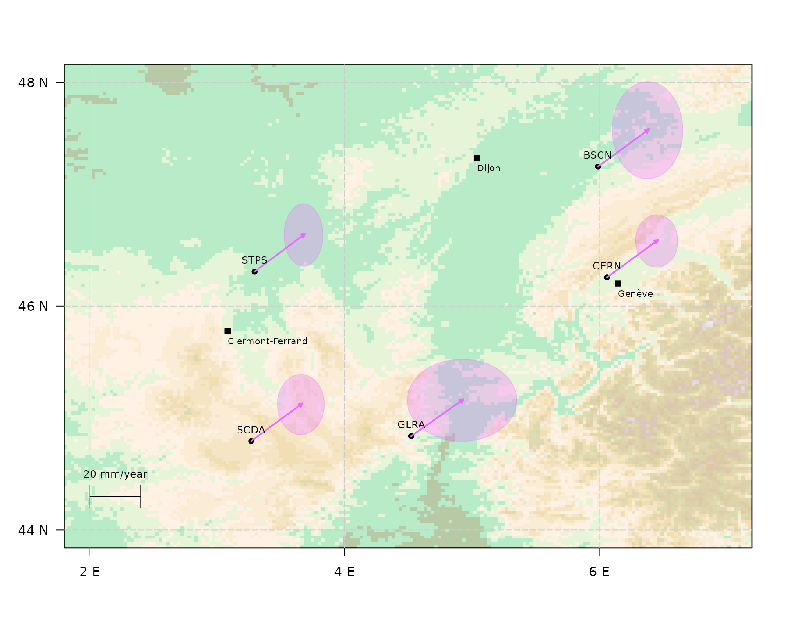

vignettes/estimate_small_network.Rmd
estimate_small_network.Rmd
# define some function for plotting
ellipse <- function (hlaxa = 1, hlaxb = 1, theta = 0, xc = 0, yc = 0, newplot = F, npoints = 100, fill = F, fillColor = "black", ...) {
a <- seq(0, 2 * pi, length = npoints + 1)
x <- hlaxa * cos(a)
y <- hlaxb * sin(a)
alpha <- angle(x, y)
rad <- sqrt(x^2 + y^2)
xp <- rad * cos(alpha + theta) + xc
yp <- rad * sin(alpha + theta) + yc
if (newplot)
plot(xp, yp, type = "l", ...)
else {
lines(xp, yp, ...)
if (fill == T) {
polygon(xp, yp, border = F, col = fillColor)
}
}
invisible()
}
angle <- function (x, y) {
angle2 <- function(xy) {
x <- xy[1]
y <- xy[2]
if (x > 0) {
atan(y/x)
}
else {
if (x < 0 & y != 0) {
atan(y/x) + sign(y) * pi
}
else {
if (x < 0 & y == 0) {
pi
}
else {
if (y != 0) {
(sign(y) * pi)/2
}
else {
NA
}
}
}
}
}
apply(cbind(x, y), 1, angle2)
}
# define function to make color transparent
make_transparent <- function(colors, alpha = 0.5) {
# Ensure alpha is between 0 and 1
if(alpha < 0 || alpha > 1) {
stop("Alpha value must be between 0 and 1")
}
# Convert colors to RGB and add alpha
transparent_colors <- sapply(colors, function(col) {
rgb_val <- col2rgb(col) / 255
rgb(rgb_val[1], rgb_val[2], rgb_val[3], alpha = alpha)
})
return(transparent_colors)
}
# Estimate little network in France
all_station = download_all_stations_ngl()
# download selected stations
selected_station =c("BSCN","CERN" ,"SCDA", "GLRA", "STPS")
# selected_station = c("BSCN")
df_network = all_station%>% filter(station_name %in% selected_station)
df_network## station_name latitude longitude height
## <char> <num> <num> <num>
## 1: BSCN 47.24688 -354.0106 359.5549
## 2: CERN 46.25695 -353.9394 525.9422
## 3: GLRA 44.83926 -355.4759 813.9238
## 4: SCDA 44.79452 -356.7325 1115.3433
## 5: STPS 46.30844 -356.7060 299.6851
df_estimated_velocities = data.frame(matrix(NA, nrow=dim(df_network)[1], ncol = 6))
for(station_index in seq_along(df_network$station_name)){
station_name = df_network$station_name[station_index]
# extract station
station_data = download_station_ngl(station_name = station_name)
fit_N = gmwmx2(station_data, n_seasonal = 2, component = "N", stochastic_model = "wn + pl")
fit_E = gmwmx2(station_data, n_seasonal = 2, component = "E", stochastic_model = "wn + pl")
df_estimated_velocities[station_index, 1] = station_name
df_estimated_velocities[station_index, 2:6] = c(fit_N$beta_hat[2], fit_N$std_beta_hat[2],fit_E$beta_hat[2], fit_E$std_beta_hat[2], dim(fit_N$design_matrix_X)[1])
cat(paste0("Processing station ",station_name, " ", station_index ,"/", length(df_network$station_name), "\n"))
}## Processing station BSCN 1/5
## Processing station CERN 2/5
## Processing station GLRA 3/5
## Processing station SCDA 4/5
## Processing station STPS 5/5
colnames(df_estimated_velocities) = c("station_name", "estimated_trend_N", "std_estimated_trend_N", "estimated_trend_E", "std_estimated_trend_E", "time_series_length")
df_estimated_velocities$estimated_trend_N_scaled = df_estimated_velocities$estimated_trend_N * 365.25
df_estimated_velocities$std_estimated_trend_N_scaled = df_estimated_velocities$std_estimated_trend_N * 365.25
df_estimated_velocities$estimated_trend_E_scaled = df_estimated_velocities$estimated_trend_E * 365.25
df_estimated_velocities$std_estimated_trend_E_scaled = df_estimated_velocities$std_estimated_trend_E * 365.25
# transform longitude
df_network$longitude2 <- ifelse(df_network$longitude < -180,
df_network$longitude + 360,
df_network$longitude)
# merge with location
df_estimated_velocities_and_location = dplyr::left_join(df_estimated_velocities, df_network, by="station_name")
# print estimated North and East velocities
head(df_estimated_velocities)## station_name estimated_trend_N std_estimated_trend_N estimated_trend_E
## 1 BSCN 4.435408e-05 3.262683e-07 5.345211e-05
## 2 CERN 4.455772e-05 1.860753e-07 5.354428e-05
## 3 GLRA 4.380876e-05 2.866518e-07 5.466610e-05
## 4 SCDA 4.475967e-05 2.134131e-07 5.337310e-05
## 5 STPS 4.481839e-05 2.197019e-07 5.248970e-05
## std_estimated_trend_E time_series_length estimated_trend_N_scaled
## 1 2.187197e-07 8059 0.01620033
## 2 1.384963e-07 4968 0.01627471
## 3 3.368441e-07 5739 0.01600115
## 4 1.454117e-07 6206 0.01634847
## 5 1.217579e-07 6269 0.01636992
## std_estimated_trend_N_scaled estimated_trend_E_scaled
## 1 1.191695e-04 0.01952338
## 2 6.796401e-05 0.01955705
## 3 1.046996e-04 0.01996679
## 4 7.794912e-05 0.01949452
## 5 8.024612e-05 0.01917186
## std_estimated_trend_E_scaled
## 1 7.988737e-05
## 2 5.058577e-05
## 3 1.230323e-04
## 4 5.311164e-05
## 5 4.447209e-05
knitr::kable(df_estimated_velocities)| station_name | estimated_trend_N | std_estimated_trend_N | estimated_trend_E | std_estimated_trend_E | time_series_length | estimated_trend_N_scaled | std_estimated_trend_N_scaled | estimated_trend_E_scaled | std_estimated_trend_E_scaled |
|---|---|---|---|---|---|---|---|---|---|
| BSCN | 4.44e-05 | 3e-07 | 5.35e-05 | 2e-07 | 8059 | 0.0162003 | 0.0001192 | 0.0195234 | 7.99e-05 |
| CERN | 4.46e-05 | 2e-07 | 5.35e-05 | 1e-07 | 4968 | 0.0162747 | 0.0000680 | 0.0195570 | 5.06e-05 |
| GLRA | 4.38e-05 | 3e-07 | 5.47e-05 | 3e-07 | 5739 | 0.0160011 | 0.0001047 | 0.0199668 | 1.23e-04 |
| SCDA | 4.48e-05 | 2e-07 | 5.34e-05 | 1e-07 | 6206 | 0.0163485 | 0.0000779 | 0.0194945 | 5.31e-05 |
| STPS | 4.48e-05 | 2e-07 | 5.25e-05 | 1e-07 | 6269 | 0.0163699 | 0.0000802 | 0.0191719 | 4.45e-05 |
# load elevation data
tmp=tempdir()
elevation_data_swiss <- geodata::elevation_30s(country = "Switzerland", path = tmp)
elevation_data_france <- geodata::elevation_30s(country = "France", path = tmp)
elevation_data_italy <- geodata::elevation_30s(country = "Italy", path = tmp)
# load raster
elevation_raster_swiss <- raster(elevation_data_swiss)
elevation_raster_france <- raster(elevation_data_france)
elevation_raster_italy <- raster(elevation_data_italy)
# create combined raster
combined_raster <- merge(elevation_raster_swiss, elevation_raster_france,
elevation_raster_italy)
# sett plot limits
xlims = c(2,7)
ylims = c(44, 48)
# Custom color scale
custom_colors <- c(
"#33660059", "#33CB6659", "#BAE39159", "#FEDBB859", "#F2C98859",
"#E5B75859", "#D8A52759", "#A7991F59", "#A38F1959", "#A1851359", "#9E7B0D59", "#9B710759",
"#98660059", "#A1595959", "#B1767659", "#B6929259", "#C1AFAF59", "#CBCBCB59", "#E4E4E459", "#FEFEFE59"
)
# Define breaks for the color scale based on the raster values
raster_values <- values(combined_raster)
min_val <- min(raster_values, na.rm = TRUE)
max_val <- max(raster_values, na.rm = TRUE)
# Generate breaks based on the range of the raster data
num_colors <- length(custom_colors)
breaks <- seq(min_val, max_val, length.out = num_colors + 1)
# Get the country boundaries using geodata
world <- geodata::world(path = tmp)
# Filter for the countries of interest
countries <- world[world$NAME_0 %in% c("Switzerland", "France", "Italy", "Germany"), ]
countries_sf <- st_as_sf(countries)
# plot
plot(NA, xlim = xlims, ylim = ylims, las = 1,
ylab = "",xlab="",
xaxt="n", yaxt="n"
)
axis(side = 1, at = seq(0,12, by=2), labels = (paste0( seq(0,12, by=2), " E")))
axis(side = 2, at = seq(40,50, by=2), labels = (paste0(seq(40,50, by=2), " N")), las=1)
# Plot the elevation data
raster::plot(combined_raster,
col = custom_colors,
# breaks=breaks,
add = TRUE, # Add to the existing plot
legend = FALSE) # Disable default legend
# add axis
for (i in seq(-150, 150, by = 2)) {
abline(v = i, col = "grey80", lty=5)
}
for (i in seq(-90, 90, by = 2)) {
abline(h = i, col = "grey80", lty=5)
}
# add points for station data
points(df_network$longitude2, df_network$latitude, pch=16)
# set param for graph
shift <- 0
scale_arrow <- 20
arrow_width = .1
arrow_lwd = 2
my_col = c("#e96bff")
scale_ellipses=3500
my_col_trans = make_transparent(my_col,alpha = .3)
# Overlay country boundaries
plot(countries_sf$geometry, add = TRUE, border = "black", lwd = 2)
for (i in seq(nrow(df_estimated_velocities_and_location))) {
ellipse(
hlaxa = as.numeric(df_estimated_velocities_and_location[i,'std_estimated_trend_E_scaled']) * scale_ellipses,
hlaxb =as.numeric( df_estimated_velocities_and_location[i,'std_estimated_trend_N_scaled']) * scale_ellipses,
theta = 0,
xc = as.numeric(df_estimated_velocities_and_location[i,'longitude2'])+as.numeric(df_estimated_velocities_and_location[i,'estimated_trend_E_scaled'])*scale_arrow,
yc = as.numeric(df_estimated_velocities_and_location[i,'latitude'])+as.numeric(df_estimated_velocities_and_location[i,'estimated_trend_N_scaled'])*scale_arrow,
fill = T,
fillColor = my_col_trans[1],
lw = 1,
col = my_col_trans[1]
)
x0 <- as.numeric(df_estimated_velocities_and_location[i, "longitude2"])
y0 <- as.numeric(df_estimated_velocities_and_location[i, "latitude"])
x1 <- as.numeric(df_estimated_velocities_and_location[i, "longitude2"] + df_estimated_velocities_and_location[i, "estimated_trend_E_scaled"] * scale_arrow)
y1 <- as.numeric(df_estimated_velocities_and_location[i, "latitude"] + df_estimated_velocities_and_location[i, "estimated_trend_N_scaled"] * scale_arrow)
shape::Arrows(
x0 = x0, y0 = y0, x1 = x1, y1 = y1,
col = my_col,
arr.type = "triangle",
arr.length = .10,
arr.width = arrow_width,
lwd=arrow_lwd
)
}
# add
text(x = df_estimated_velocities_and_location$longitude2, y=df_estimated_velocities_and_location$latitude,
labels = df_estimated_velocities_and_location$station_name, pos = 3, cex = 0.8, col = "black")
# define cities
df_city = tibble(address=c("Genève", "Clermont-Ferrand", "Dijon"))
# Load geolocalisation of cities
df_geo <- df_city %>%
geocode_combine(
queries = list(
list(method = 'osm')
),
global_params = list(address = 'address'),
cascade = FALSE
)## ## Passing 3 addresses to the Nominatim single address geocoder## Query completed in: 3 seconds
df_city_2 = cbind(df_city, df_geo)
df_city_2$City = df_city_2$address
# Add city to map
points(x=df_city_2$lon, y= df_city_2$lat, pch=15, col="black")
cex_size_city = .7
for(i in seq(dim(df_city_2)[1])){
text(x=df_city_2$lon[i], y = df_city_2$lat[i],
labels = df_city_2$City[i],
adj=c(0,2),col="black",
cex = cex_size_city )
}
# add a legend
twenty_mm_per_year = .02
twenty_mm_per_year_mm_per_year_scaled = twenty_mm_per_year*scale_arrow
x_start = xlims[2]-5
y = ylims[1]+.3
segments(x0 = x_start, y0 = y, x1 = x_start+twenty_mm_per_year_mm_per_year_scaled, y1 = y)
delta_y= .1
segments(x0 = x_start, x1 = x_start, y0 = y+delta_y, y1 = y-delta_y)
segments(x0 = x_start+twenty_mm_per_year_mm_per_year_scaled, x1 = x_start+twenty_mm_per_year_mm_per_year_scaled, y0 = y+delta_y, y1 = y-delta_y)
txt_size = .8
text(x = x_start+twenty_mm_per_year_mm_per_year_scaled/2,
y = y+.1,
pos = 3,cex=txt_size,
labels = "20 mm/year")